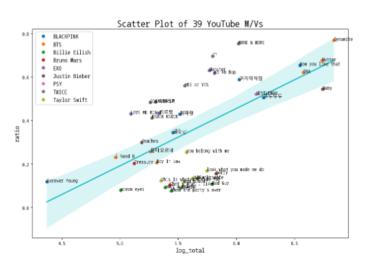

L1. 창업을 위한 리서치 방법론
데스크/현장/시장/사용자 리서치를 위한 기초방법론
강사 소개
강사 소개
이민섭
- 학력 및 경력
- 서울대학교 자유전공학부(인지생물심리학, 경제학)
- 서울대학교 과학사 및 과학철학 협동과정 석사(과학철학)
- 서울대학교 인지과학 협동과정 박사수료
- (주)트랜스버스 COO
- 가천대 창업대학 초빙교수
- 관심분야
- 진화론을 통한 자연과 인간 그리고 문화와 기술을 설명
- 도덕성과 문화의 진화
- 교육의 미래와 디지털 전환
Publications
인간 독특성에 대하여(2015, 서울대 석사학위 논문)
Lee, M. S., & Jang, D. (2017). The Limit of Gene-Culture Co-evolutionary Theory. Korean Journal of Cognitive Science, 28(3), 173-191.ISO 690
장대익, & 이민섭. (2017). 인공물의 진화와 혁신: 비유를 넘어서. 인공물의 진화, 26-69.
장대익, & 이민섭. (2018). 역겨움의 도덕적 지위에 관하여. 철학연구, 122, 51-84.ISO 690
Projects
- UX 전략 컨설팅 연구(2019.10 ~ 2020.4), 삼성전자
- 우리나라 초저출산의 원인과 대책에 관한 진화심리학적 연구(2020. 4 ~ 2020.10.), 대한민국 감사원
- 문화컨텐츠 확산에 영향을 주는 팬활동에 대한 연구(2021. 5 ~ 2021.12), 하이브
- 새로운 기술에 대한 도덕판단 연구(2022. 7 ~ 현재)
UX 전략 컨설팅 연구
UX 전략 컨설팅 연구
UX 전략 컨설팅 연구
초저출산 연구
문화콘텐츠 확산 연구
새로운 기술에 대한 도덕판단 연구

Work experiences
- 석사 이후 장교로서 군생활
- 박사 진학 이후 연구와 프로젝트 이외에 온라인 화상 커뮤니케이션 서비스를 운영하는 트랜스버스에 합류하여 현재까지 병행하고 있음.
수업 목표
수업 목표
- 다양한 기초적 리서치 방법론에 대한 학습
- 리서치의 기반이 되는 과학적 추론에 대해 이해한다.( + 통계적 방법)
- 상황에 맞는 적합한 조사 방법론을 선택하고 시행해본다.

리서치란?
리서치란?
Re + search
Search에서만 끝나면 안됨
리서치의 목적은 다양한 방법을 통해 반복적으로 얻은 정보들 중 의미있는 통찰을 추출하여 사업 및 운영의 의사결정에 활용하는 것에 있다
리서치의 종류
- 마켓 리서치
- 우리가 하려는 사업의 시장크기가 어떻게 되는지, 성장 추세에 있는지, 경쟁 기업들의 수와 시장 점유가 어떻게 되는지 등
- 디자인 리서치
- 사용자들에게 만족감을 주고 효율적인 경험을 제공하기 위해 사용자가 해당 제품과 서비스를 경험하는 과정에서 어떤 행동을 하고 어떤 느낌을 받는지 조사.
- 그로스 해킹
- 제품 및 서비스의 이용 단계마다 핵심 지표를 정의하고, 데이터 기반의 실험을 통해 핵심 지표를 개선하는 방법론
- 순수 리서치
- 새로운 기능과 기술을 가능하게 하기 위해 새로운 사실이나 원리를 찾는 활동
스타트업과 리서치
- 정보를 통해 통찰을 얻어낸다는 리서치의 원리는 공통
- 효율적인 검증을 빠르게 진행하여 반복해서 의사결정을 해나가는 것이 중요
- 스타트업 활동 자체를 성공하는 비즈니스 모델을 구축하기 위한 리서치라고 볼 수 있음.
- 다양한 영역의 리서치가 서로 완벽하게 분리되는 것이 아니다.
정보 수집의 중요성
- 신뢰할 수 없고 무의미한 정보들을 통해서는 절대 의미있는 통찰을 추출해 낼 수 없다.
- 남이 모아놓은 정보를 활용한다면 정보의 출처를 중요시 해야한다.
- 조사를 통해 정보를 얻는다면 좋은 정보를 얻기 위해 방법론을 정교하게 적용해야 한다.
ChatGPT 시대의 리서치
ChatGPT의 시대에 기술을 잘 활용하면 리서치를 효율적으로 할 수 있는 기회가 찾아왔다고 할 수 있지만, 사업적 의사결정을 위한 정보들은 출처를 잘 확인하는 습관을 들이고 비판적 검토를 꼭 거쳐야 함.

리서치와 과학적 추론
과학적 추론이란?
- 왜 과학적 추론을 공부해야 하는가?
- 사생활이나 직장생활 및 창업활동에서 과학적 정보를 이해하고 평가하는 데 도움이 됨.
- 이러한 능력은 중요한 직위에 있는 경우에는 많은 사람들의 생사 또한 걸린 문제일 수 있다.
과학적 추론의 모형
- 통계적 모형
- 빈도주의적 통계
- 베이즈주의 통계
- 인과적 모형
- 실험 방법론
통계적 모형과 확률
- 통계적 모형은 사회과학, 행동과학, 생의학에서 널리 사용됨.
- 이 분야의 연구 결과는 거의 모든 사람의 일상적 관심사와 아주 많이 관련되는 경향이 있다.
- 예를 들어 20세부터 30세 사이의 미국 여성들 중 풀타임 근로자는 몇 퍼센트인가?
- 한국 대학생들 중 스타트업에 관심있는 사람은 몇 퍼센트인가?
통계적 연구의 요소들
유의사항
- 통계적 방법론의 기반이 되는 이론을 모두 알 필요는 없음.
- 컴퓨터의 작동원리를 이해하면서 컴퓨터를 사용하는 사람이 있을까?
- 워드 프로세서 프로그램의 작동원리를 이해하면서 문서 작성을 하는 사람이 있을까?
- 위의 도구들은 직접 사용해볼 때에만 습득이 되고 내것이 됨.
- 연습문제를 푸는 것보다 실제 문제를 풀때 더 도움이 됨.
통계적 추정의 개념
- 진실을 품고 있는 모집단의 분포를 현실적 제약에 의해 파악하기 힘들기 때문에 확인할 수 있는 일정 수의 표본을 뽑은 뒤 그 자료를 가지고 모집단의 분포를 추측해보는 것
- 점추정과 구간추정
통계적 추정의 사례
- 점추정(Point estimation)
- 대한민국 성인 남성의 평균키를 구하기 위해 100명의 표본을 뽑아 평균키를 구했더니 175.6cm가 나왔다. 이를 기반으로 대한민국 성인남성의 평균키가 175.6cm 라고 하는 것
- 구간추정(Interval estimation)
- 점추정의 한계를 보완하는 방법
- 위의 사례를 예로 한다면, 95%(또는 99%) 확률로 대한민국 성인남성의 평균키는 172.6cm에서 178.6cm 사이에 있다.
가설 검정
위의 통계적 추정의 구간 추정을 활용하여 가설을 기각할지 인용할지를 결정하는 과정
도전하려는 원래 가설(분포)를 가정했을때 표본을 통해 관측된 값이 얼마나 말이 안되는 확률인지 보여서 원래 분포가 ’진실’이 아님을 판정하는 작업
귀무가설(\(H_0\)) : 기존에 지지를 받았던 가설
대립가설(\(H_1\)) : 귀무가설이 아닌 가설
보통 귀무가설은 평온한 상태를 가정(무죄추정의 원칙)
- 암이 아니다. 공격 징후가 없다. 스팸이 아니다. 죄가 없다 등
가설 검정의 오류가능성
| 구분 | \(H_0\) 가 참일 때 | \(H_0\) 가 거짓일 때 |
|---|---|---|
| \(H_1\) 채택 안함 | 옳은 결정 | 제 2종 오류 |
| \(H_1\) 채택 | 제 1종 오류 | 옳은 결정 |
- 제 1종 오류 : 대안 가설이 틀린데 맞다고 하는 경우 = false positive
- 제 2종 오류 : 대안 가설이 맞는데 틀리다고 하는 경우 = false negative
더 위험한 오류는 무엇일까?
두 오류의 비교
풀숲에 무엇인가 지나간다.(관측)
귀무가설 : 풀숲엔 무서운 무언가가 없다.
대립가설 : 풀숲에 무서운 무언가가 있다.
철수는 대립가설이 무조건 맞다고 하는 제 1종 오류자(겁쟁이)
영희는 대립가설이 무조건 틀리다고 보는 제 2종 오류자(용자)
누가 오래 살아남았을까?
두 오류의 trade-off

비즈니스 영역에서 가설 검증과 오류
해당 서비스(혹은 서비스 내의 특정 기능)에 대한 조사를 할 때를 상상해보자.
철수는 높은 확률로 우리의 서비스에 대한 사용자의 관심, 니즈 등이 존재하고 우리의 기능이 사용성을 증대시킨다고 보는 제 1종 오류자
영희는 높은 확률로 우리의 서비스에 대한 사용자의 관심, 니즈 등이 없고, 우리의 기능이 사용성을 증대시키지 않는다고 보는 제 2종 오류자
누가 더 오래 살아남을까?
비즈니스 영역에서 가설 검증과 오류
귀무가설 : 아이디어가 시장에 먹히지 않는다.
대안가설 : 아이디어가 시장에 먹힌다.
내가 낸 아이디어가 무조건 대박이 날 것이라고 생각하는 제 1종 오류자
내가 낸 아이디어는 기본적으로 시장에서 외면 받을 것이라 생각하는 제 2종 오류자
제2종 오류자의 함정
보수적인 생각을 가지는 것은 건강하지만 생각만하고 검증을 하지 않으면 엄청난 기회를 놓치게 될 수도 있다.
상관관계와 인과관계
- 비즈니스 영역에서 처치의 효과성을 살펴보기 위해서는 인과관계에 대한 추론을 해야함.
- 하지만 기초 자연과학 실험이 아닌 이상 명확한 인과란 검증하기 쉽지 않음.
- 따라서 상관관계 등의 약한 통계적 관계에서부터 시작하여 해당 효과가 인과라고 판단할 수 있는 수준에 이르게 하기 위해 많은 부가적 절차를 거치게 된다.
상관관계의 의미
- 상관관계란 쉽게 말하면 “연동이 되어 있는 것처럼 보인다”라고 할 수 있다.
- 연동이 되어 있는 것처럼 보인다라는 말은 겉으로 보기에 같이 가거나 반대로 가거나 한다는 의미

상관관계의 유의미성 검정
- 상관계수 또한 통계적 추정의 대상이 될 수 있음.
- 진실을 품고 있는 모집단의 분포를 현실적 제약에 의해 파악하기 힘들기 때문에 확인할 수 있는 일정 수의 표본을 뽑은 뒤 그 자료를 가지고 모집단의 분포를 추측해보는 것
- 여기서는 두개 이상의 변수들의 분포
- 샘플로 뽑은 자료들을 통해 모집단의 실제 상관계수를 추정.
- 평균에 대한 추정과 같이 확률적인 형태로 추정.
상관관계의 사례


상관관계 분석 방법
- 상관관계 분석이라는 생각 도구를 구현해주는 도구들
- 엑셀, R, Python… (손으로도 가능, 눈으로는 글쎄…)

좋은 도구의 조건
- 쉽게 분석을 루틴화할 수 있고,
- 필요하면 이론적 배경에 대해서도 확인할 수 있고,
- 분석자료를 왜곡없이 쉽게 확인할 수 있는,
Exploratory!
- 탐색적 데이터 분석(Exploratory Data Analysis, EDA)
- routinizing!!
Exploratory로 간단한 상관분석
- table 형태로 된 자료 준비(Excel file, CSV, TXT 등등)
- import
- 분석. 끝!
Exploratory로 간단한 상관분석
- 키와 부모님의 키의 상관관계
- 지역별 날씨자료
인과관계를 추론할 수 있는 방법들
- 빈도주의적 A/B 테스트
- t-test, chi-square test
- 베이지언 기초 개념
- 실험 방법
A/B 테스트(빈도주의적 접근)
A/B 테스트는 상관관계 분석보다는 더 나아가 인과관계를 추론하기 위해 수행함.
실험군과 대조군을 나누는 실험적 개입이 필요함.
대조군은 귀무가설을 대표하고, 실험군이 대립가설을 대표한다고 생각하면 됨.(물론 베이스가 되는 가설이 바뀌어도 무방하다.)
실험군과 대조군에 행한 처치를 통해(표본 수준) 결과에 있어서 실제 차이를 만들어냈는지(모집단)를 확인하는 작업
t test, Chi-square test
t-test
- 두 집단의 평균이 유의미한 차이를 보이는지 검정
- 특정 기능 및 디자인 적용결과 실험군이 가지게 된 속성(예를 들어 선호도)에 유의미한 영향을 주었는가?
Chi-square test
- 두 집단의 비율이 유의미한 차이를 보이는지 검정
- 특정 기능 및 디자인 적용 결과 달라진 전환고객의 비율이 유의미한가?
빈도주의적 A/B 테스트의 한계
We need to know how much of the data we need to collect for the test before starting the test.
We can’t evaluate the result in real-time as we go, instead we need to wait to make any decision until we collect a full of the planned data size.
The test result is not intuitively understandable especially for those without a statistical background. (What is P-value again?)
The test result can be read as black and white, either it is statistically significant or not. This makes it hard to figure out what to do especially when not statistically significant.
베이지언 통계의 기초
독감 사례
당신은 머리가 아프고 목이 따끔거렸다. 당신은 독감에 걸린 사람의 90%가 이러한 증상을 겪는다고 알고 있다. 90%라니!!! 나는 독감에 걸린 것인가?
추가정보를 얻기 위해 구글에 들어가서 1년에 독감에 걸리는 비율을 찾아보니 5%인 것을 알게 되었다. 휴… 독감에 걸릴 확률 5%이니까 안전하겠군…
여기에 더해 1년에 두통과 인후통을 겪는 사람의 비율은 20%라는 정보를 얻게 되었다. 이제 혼란스럽다. 나는 독감일까? 아닐까?
- 당신이 독감일 확률은?
독감 사례

독감 사례
독감 사례

독감 사례

Quiz! 소개팅 사례
길동이는 오랜만에 소개팅 자리에 나갔다. 잘 차려입고 기대에 부푼 마음에 식사 장소에서 상대를 만났다. 길동이는 그녀가 너무 맘에 들었지만 그럴수록 그녀가 나에게 관심이 없을 것이라고 지레 짐작하게 되었고 그러다보니 더 의기소침해지는 것만 같았다. 그래도 식사 중에 좋은 대화들이 오갔고, 식사가 끝나갈 즈음에는 그녀는 환한 미소와 함께 다음을 기약하는 것과 같은 암시의 말을 하기도 하였다. 그래서 그는 그녀와 헤어지는 순간 머리속이 복잡해졌다. 과연 그녀는 나를 맘에 들어할 것인가? 나는 다시 데이트 신청을 해도 될까? 😂
Quiz! 소개팅 사례
- 추가정보
- 여성들이 길동이에게 호감을 가질 확률 : 20%(길동이의 생애사로부터 얻어낸 수치)
- 여성이 호감이 있을때 미소와 추파를 던질 확률: 90%
- 여성이 호감이 없을때 미소와 추파를 던질 확률 : 10%
Quiz! 소개팅 사례 정답
Quiz! 소개팅 사례 정답(그림으로)

베이지언 A/B 테스트의 장점
- 테스트 케이스를 조금씩 늘려가며 변화하는 수치들을 통해 검증 결과를 분석
- 개선이 있는지 없는지가 아니라 얼마만큼의 개선이 있는지,
- 유의미함이 나타나지 않아도 의미 있는 결과일 수 있음.
- 검증을 유의미/유의미하지 않음 이라는 흑백논리가 아니라 연속적인 효과에 대해서 이야기 할 수 있음.
- p값 등에 대해 사전 설명할 필요없음.
베이지언 A/B 테스트 과정
- 사후확률 계산
- 사후확률 판단
- 판단에 따른 실험종료 여부 결정
베이지언 A/B 테스트의 적용
- 실험을 진행하면서 실시간으로 개선율을 추적
- 개선율이 안나오면 실험 종료
- 유의미하지는 않아도 한쪽 안이 더 좋게 나오는 경우는?
- 의사결정을 통해 발생할 비용이 크지 않을 경우 좋은 안을 선택 진행
- 비용이 큰 경우 실험을 좀 더 진행
베이지언 A/B 테스트 실습
in Exploratory
- 게임의 버전에 따른 retention율 테스트
Exploratory
간단한 자료 분석,
A/B 테스팅의 생활화
대쉬보드 등 구현으로 의사소통의 허브
등등
…
사이트에서 더 많은 자료와 튜토리얼 확인가능
잘못된 통계 분석과 시각화 사례
- 적합한 방법을 사용하지 않았거나,
- 결과를 교묘하게 변형하는 사례


잘못된 통계 분석의 사례
- 좋은 도구를 써야함.
- 용도에 맞는 칼을 쓰자
- 디자인 툴로 자료를 시각화하지는 말자(적어도 내부적인 소통을 할 때에는)
- 외부적으로는…??
심리학 실험 도구
- 기만 실험
기만실험의 사례, 선한 사마리아인 사례
달리와 베이트슨은 프린스턴 신학대학 학생들을 피험자로 선정하고 그들 중 절반에게는 선한 사마리아인에 관한 설교를 하라는 과업을 주었고, 나머지에게는 이와 관계없는 설교 과제를 주었다. 피험자들이 설교를 하러 가는 길엔 강도에게 습격을 당한 듯 보이는 사람이 쓰러져 있는 상황을 연출해놓았다. 이 사람은 실험자들의 지시에 따라 피험자들이 지나갈 때마다 기침을 두 번 하고 신음 소리도 냈다. 상식적으론 선한 사마리아인에 관한 설교를 하기로 되어 있는 학생들이 쓰러져 있는 사람에게 도움을 더 많이 줄 것 같지만, 실제 나온 결과는 딴판이었다. 도움을 준 비율을 결정한 변수는 설교의 주제가 아니라, 오직 설교 시작 전까지 남은 시간이었다.
기만실험의 짝궁, debriefing
- 기만실험을 수행하게 되면 반드시 참여자에게 사후 설명으로 실제로 측정 및 관찰하려고 했던 것이 무엇이었고 왜 기만의 방법을 썼는지 알리고, 그에 맞는 맞는 보상과 함께 실험결과를 사용하는 것에 대해 재동의를 얻어야 함.

다양한 리서치 방법들
리서치 방법론 개요
데스크 리서치
조사 방법론
- 정성적 방법론
- 인터뷰, 관찰, 사례 연구 등
- 정량적 방법론
- 서베이, 로그 수집 등
- 정성적 방법론
데스크 리서치
- 모든 리서치의 기초
- 내가 관심있는 분야에 대해 다른 사람이 시간과 노력을 들여 잘 정리해 놓은 것을 취하는 것!
- 정도의 차이는 있을지 몰라도 마켓 리서치, 디자인 리서치, 그로스 해킹, 순수 리서치의 시작 단계에서 반드시 하게 되는 과정
- 정보의 출처가 상당히 중요
- 공신력 있는 기관이 발행하는 보고서, 논문 등
- 개인 블로그 등의 정보는 정보의 출처를 반드시 확인할 것!
AI 기반의 데스크 리서치
- chatGPT 등 생성형 AI를 활용하는 방법
- AI와 협업하는 방법을 고민

정성적 조사 방법론
정성적 방법론 - 관찰
- 관찰은 조사 대상자의 행동을 있는 그대로 파악하는데 매우 효율적인 방법 중 하나
- 중요한 것은 관찰자가 되도록 눈에 띄지 않도록 그 환경에 녹아드는 것
- 왜 그런 행동을 하는지 추측해야하는 단점이 있음

정성적 방법론 - 관찰
- 구경: 현장에 가서 일어나는 현상과 활동을 관찰(e.g. 쇼핑몰에서 사람들의 쇼핑행태관찰)
- 추적: 조사 대상자의 특정 활동을 하는 것을 따라다니며 관찰, 사전 동의가 필요
- 잠입: 사람들에게 알리지 않고 조사자가 직접 인터랙션을 하며 일어나는 일을 관찰, 직접 서비스나 프로세스를 밟아봄
정성적 방법론 - 관찰
- 아무것도 모른다는 마음가짐
- 조사자가 이전의 개인적인 경험으로 얻은 지식, 관점을 배제함.(이론적재적 판단)
- 관찰의 기록
- 간단한 메모, 카메라를 통해 사진/영상 촬영 등으로 기록(누가 있나, 어떤 물건이 사용되나, 어떤 행동이 벌어지나 등)
- 추후 기록을 통해 사용자 행동을 재구축할 수 있어야 함
- 주의사항
- 해석은 미룸
- 자연스러운 상황을 방해하지 않도록 주의
- 기록시 사생활 및 개인정보 문제 고려
정성적 방법론 - 인터뷰
- 사용자들의 행동,이유,가치관 등에 대해 깊고 풍부하게 조사할 수 있음
- 왜 그랬는지, 원하는 바는 무엇인지 가장 직접적으로 답을 들을 수 있는 방법
- 실제 그들이 생활하는 공간(집, 직장 등)에서 진행하는 경우 맥락 파악에 좀 더 용이함
- 하지만, 사람들이 자신이 한다고 말하는 것과 진짜 어떻게 행동하고 있는가는 큰 차이가 있을 수 있기 때문에 ‘관찰’ 등 다른 조사 방법을 통한 보완이 필요
정성적 방법론 - 인터뷰
1. 대상의 수
- 개인 인터뷰: 1명을 대상으로 진행
- 그룹인터뷰 : 여러 명을 한 자리에 모아두고 함게 인터뷰를 진행(FGI, Focus Group Interview)
2. 대상
- User Interview
- Stakeholder Interview
- Expert Interview
정성적 방법론 - 인터뷰
인터뷰 조사자(interviewer)는 1~3명
- 조사자가 너무 많으면 부담스러워 할 수 있음.
- 모더레이터 : 인터뷰 진행자
- 노트테이커 : 인터뷰 내용 기록
- 레코더 : 사진 및 동영상 촬영, 노트테이커 기록의 백업
정성적 방법론 - 인터뷰
Interview Process
정성적 방법론 - 인터뷰
주의사항
- 인터뷰도 대화다.
- 대답을 유도하지 마라
- 기다림의 미학
- 라포 형성
- 꼬리물기 질문
- 너무 기억에만 의존하게 하지 마라
- 항상 진실은 아니다.
- 과도한 해석은 금물
- 일단 잘 듣기
정성적 방법론 - checklist
체크리스트를 작성하고 확인하자.
- 관찰에서 인터뷰에 걸쳐 pre-during-post에 점검/확인해야 할 절차와 준비물을 모두 목록화
- 인터뷰 가이드라인 준비에서부터 관찰+인터뷰 대상, 순서, 준비물, 장비, 조사팀의 분배

정량적 조사 방법론
정량적 방법론 - 설문지
간단한 질문을 통해 사용자의 특성과 의견을 확인하는 정량 조사 방법
- 주로 주어진 선택지에서 고를 수 있도록 객관식으로 구성(closed-end answers)
- 대규모의 인원을 대상으로, 기본적이고 간단한 패턴을 파악하는데 적합
정량적 방법론 - 설문지
| 장점 | 단점 | |
|---|---|---|
| 폐쇄형 질문: 객관식/선택지 있음 |
- 분석 용이 - 응답이 힘든 환경에서 사용가능 |
선택지를 망라하여 나열하기 어려움 |
| 개방형 질문: 주관식/선택지 없음 |
- 심층적 정보를 얻을 수 있음. - 사전연구에서 개방형 질문을 활용해서 본 서베이의 선택지를 만드는데 활용하기 좋음 |
- 정리 분석이 어려움. - 사람마다 인식이 달라서 카테고리화가 어려움 |
정량적 방법론 - 설문지
명확하게
- 조사자에게는 명확하더라도 응답자 입장에서는 모호할 수 있음
- 원하는 종류의 대답을 얻기 위해서는 질문이 명확해야 함
- 어려운 단어나 약어는 피해야 함
- 질문에서 형용사, 부사의 사용도 주의해야함.
예시1) “하루에 스마트폰 푸시알림을 평균적으로 몇 번 정도 받으십니까?” ❌
정량적 방법론 - 설문지
짧고 간결한 질문
- 의도를 잘 설명해주는 것도 중요하지만 길어지면 오히려 복잡해질 수 있음
- 최대한 간결하고 짧은 문장으로 만들어야 함
- 단순히 궁금하고 재미있을 것 같아서 질문을 추가해서는 안됨
정량적 방법론 - 설문지
한 번에 두 가지 답변을 요구하지 않도록 함
- 일명 ‘겹치기 설문(double-barreled question)’
- 하나의 설문에서 사실상 둘 혹은 이상을 묻는 것
- ‘그리고’ 등의 접속사를 사용하는 것
예시) “새로 나온 기능성 게임 OOO이 의학적으로도 치료에 도움이 되고 재미있다는 점에 동의하십니까?” ❌
정량적 방법론 - 설문지
편견이 개입된 단어, 표현을 피할 것
- 옳고 그름, 특정한 인상, 선입견을 심어줄 수 있는 단어나 어휘 사용은 피해야 함.
예시) “당신에게 자유시간이 있다면 책을 읽으시겠습니까, 아니면 그냥 게임을 하시겠습니까?” ❌
정량적 방법론 - 설문지
유도 설문은 피할 것
- 특정한 답을 요구하는 것 같은 암시나 전제가 깔려있지 않도록 주의해야함. 심리적 압박
- 설문 속에 전제가 숨어 있는 경우, ‘이중불명화(double blind)’
예시1) “대부분의 한국인처럼 스마트폰은 능숙하게 사용하십니까?” ❌
예시2) “아직도 마리화나를 피우십니까?” ❌
정량적 방법론 - 설문지
지나치게 상세한 정보를 요구하지 말 것
- 설문에 답하기 어려운 비현실적인 질문은 피함
예시) “지난 한 달 간 스마트폰을 몇 시간 정도 사용하셨습니까?” ❌
정량적 방법론 - 설문지
응답자를 불편하게 할 수 있는 질문은 되도록 피할 것
- 정말 연구문제나 분석에 필요한 경우가 아니면 지나치게 개인적인 정보, 응답이 꺼려지는 질문은 피함.
- 필요한 경우에는 직접적적으로 물어보지 않는 우회적인 방법을 활용
- 대표적인 예시는 ‘수입, 신용상태, 종교, 사업관련’ 등
예시) “귀하의 한 달 가구 소득은 어떻게 되십니까?” ❌
정량적 방법론 - 설문지
폐쇄형 질문의 선택지 설계
- 이분법적 선택이 아닌 선택지가 여러가지인 경우에는 가능한 모든 응답이 포함되어 있어야 함.
- 선택지가 여러가지인 경우에는 선택지가 상호배타적이어야 함.
예시1) “스마트폰을 가지고 계십니까?”
- 예 2) 아니오
“가장 좋아하는 TV방송국은 어디입니가?”
- KBS 2) MBC 3) SBS (❌)
예시2) “스마트폰을 사용하신지 얼마나 되셨습니까?”
- 1년 미만 2) 1~2년 3) 2~3년 (❌)
정량적 방법론 - 설문지
설문 구조
1. 인사말
- 응답률을 높이기 위해서는 조사 목적, 필요성에 대한 설득이 필요
- 짧지만 사실적이어야 하며 중립적이도록, 될 수 있으면 유쾌하고 단호하게!
정량적 방법론 - 설문지
설문 구조
2. 설문 순서
- 쉬운 질문으로 시작해서 응답자가 설문에 익숙해지도록 함
- 논리적 순서에 따라 일반적이 내용 -> 구체적인 것으로
- 비슷한 주제는 묶어서 제시
- 인구사회학적 질문, 개인정보와 관련된 부분은 설문지의 마지막에 넣는 것도 방법
정량적 방법론 - 설문지
설문 구조
3. 설문 레이아웃
- 중요한 부분은 밑줄, bold 등의 활용
- 설문지 인쇄, 디자인도 신뢰도에 영향을 미치는 중요한 요소임
- 한 페이지의 설문양, 폰트 크기, 색, 배열 등
정량적 방법론 - 로그
로그란 기록
- 다양한 분야에서 사용하고 있는 용어
- 사용 흔적을 의미하기도 함
- 일반적으로 HCI/UX 분야에서 많이 쓰이는 의미는 ’라이프 로그(life log)’로 삶의 기록을 의미하며, 개인의 생활이나 일상의 기록이자 흔적
정량적 방법론 - 로그
로그 수집
- 사용자가 직접 작성하거나 혹은 컴퓨터, 디지털 기기에서 자동으로 생성되는 로그 데이터 수집
- 자기 관찰/보고
- digital log gathering > data mining
다양한 조사 방법론 정리

강의 요약
강의 요약
- 리서치의 핵심은 정보들속에서 의미있는 통찰을 추출해내는 것
- 정보를 추출하는 방법에 정성적, 정량적 방법이 있으며,
- 그 중 정량적인 정보에서 의미를 추출하기 위해서는 통계적 지식과 도구가 필요할 수도 있다.


스타트업 창업 프로젝트
Social Desirability Bias